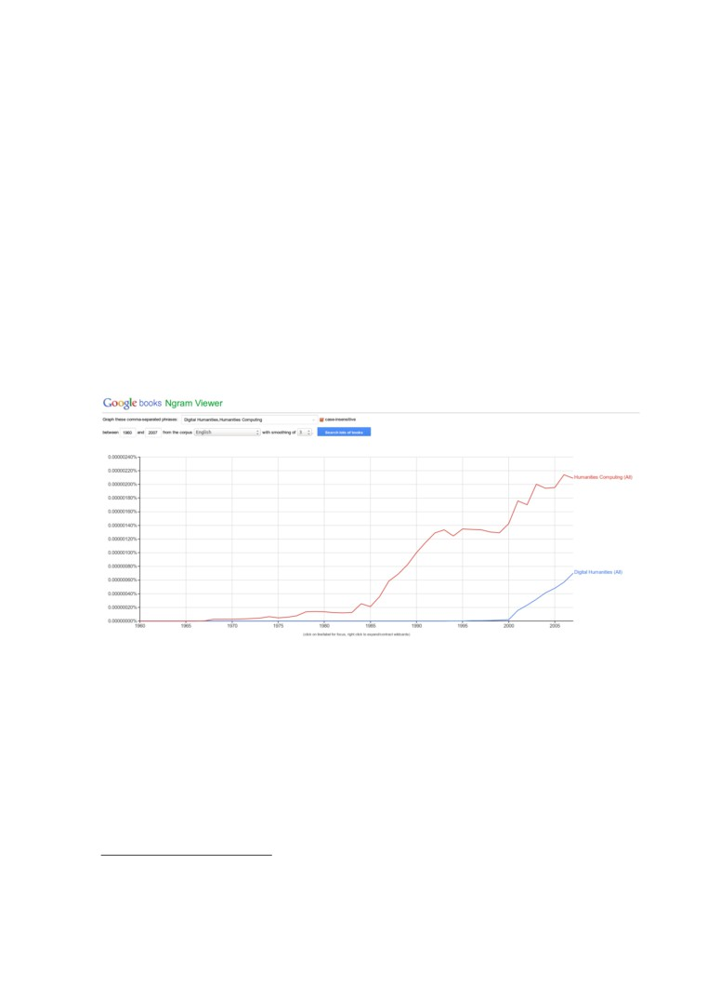
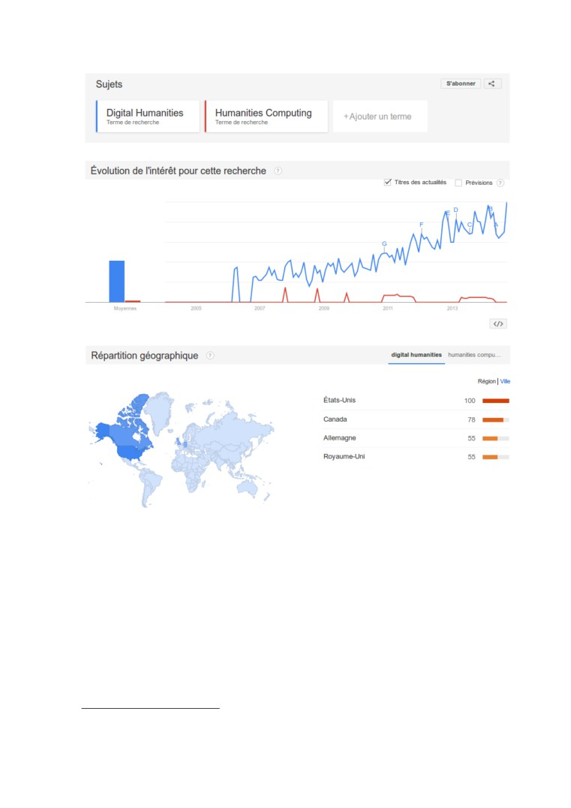
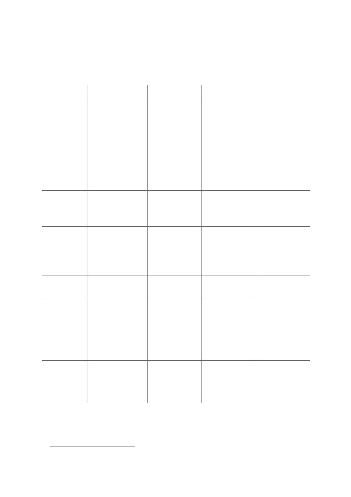

Préprint du chapitre Olivier Le Deuff, Frédéric Clavert. « Petite
histoire des humanités digitales », Le temps des humanités digitales,
(olivier Le Deuff, dir), Fyp éditions, 2014,p.15-31
Chapitre I
Petite histoire des humanités digitales
Olivier Le Deuff, Frédéric Clavert
1— Mythes et origines
Digitus Dei est hic ! C’est par ces mots que Roberto Busa1, le prêtre jésuite à l’origine de
l’utilisation de l’outil informatique sur des corpus textuels, désigne la présence divine dans le texte.
L’anecdote est à double sens, faisant autant référence à la pratique de l’index qui désigne, qu’à l’index
en tant que technique de classement des concepts ou mots-clés présents dans un document. Cette
présence digitale dans le texte s’est parfois manifestée par des symboles dans les manuscrits, tel un
doigt pointant justement l’endroit du texte qu’il fallait absolument lire. Cette symbolique a été
transférée dans les environnements numériques pour signaler un lien hypertexte par exemple. Il s’agit
d’une forme d’architexte2, un élément inclus dans un système qui se trouve dissimulé et intégré dans le
code d’un logiciel informatique et qui continue de produire des effets, même si ses origines peuvent
remonter bien au-delà.
Cette signalétique symboliquement tactile le devient de plus en plus concrètement avec les
interfaces interactives des tablettes. Tandis que l’adjectif numérique renforce la calculabilité des
données, l’adjectif digital exerce comme un rappel vers une matérialité et une « prise en main »3 que
les francophones distinguent mieux que les anglophones. Mais le débat entre digital et numérique n’est
qu’une question ponctuelle. En effet, plutôt que de s’interroger sur l’adjectif le plus adapté entre
« numérique » et « digital », il importe surtout de se demander quelles sont ces humanités auxquelles
on fait référence. Le terme d’humanités s’est vu quasi ressuscité avec l’adjonction de l’adjectif
numérique. Difficile aussi d’en donner une définition claire, si ce n’est qu’elles ont souvent été
qualifiées d’« humanités classiques ». Les humanités classiques renvoient à une connaissance de
« l’humanité » (humanitas, en latin) grâce aux connaissances et aux compétences de ceux qui se
montrent capables de lire, comprendre et d’interpréter des textes, notamment en grec et en latin.
Longtemps associées aux différents arts libéraux (quadrivium et trivium), les humanités ou études
humanistes ont aussi désigné la base de l’enseignement secondaire, notamment au XIXe siècle.
Humanities possède un sens quelque peu différent et renvoie à diverses disciplines dont l’histoire, la
philosophie, la littérature mais aussi le droit. Ce terme d’« humanités » devient polysémique et
finalement pratique puisqu’il permet de rassembler les tenants des
« belles lettres » et d’autres
disciplines plus couramment rassemblées actuellement sous le vocable de sciences humaines et
sociales. Finalement, en dehors des enjeux possibles de frontières disciplinaires, c’est aussi la question
1. Roberto Busa, « Foreword: Perspectives on the digital humanities », in S. Schreibman S., R. Siemens, J. Unsworth (Éd.), A Companion to
digital humanities, Wiley-Blackwell, 2008, p. 16-21.
2. Le sens ici est différent de celui initialement proposé par Genette : Gérard Genette, Introduction à l’architexte, Seuil, 1979. Voir aussi
Emmanuel Souchier, Yves Jeanneret et al., Lire, écrire, récrire : Objets, signes et pratiques des médias informatisés, Centre Pompidou-BPI,
2003.
3. Voir notamment le billet de Claire Clivaz, « “Humanités digitales” : mais oui, un néologisme consciemment choisi ! », sur son blog
claireclivaz.hypotheses.org.
de l’humanisme qui est posée et sans doute à travers l’humanisme, la question de l’utilité des
humanités, sans cesse menacées pour leur possible non-adaptation au marché de l’emploi4.
Évidemment, le rapport étroit entretenu avec les techniques mérite d’rtre interrogé5.
Impossible de faire également l’impasse sur un transhumanisme qui vise à améliorer génétiquement
ou par extension l’être humain. Un des plus célèbres représentants est Ray Kurzweil6, récemment
engagé par Google pour travailler sur le transfert intégral du contenu du cerveau sous forme
numérique. Un vieux mythe et fantasme déjà porté notamment par Hans Moravec7 et la L5society,
ainsi que par la science-fiction avec entre autres les écrits de William Gibson8.
Les digital humanities se sont positionnées différemment, même s’il s’agit aussi d’augmenter les
capacités d’analyse et de partage, mais peut-être à des fins plus collectives et collaboratives. Il est
probable aussi qu’il faille également songer les cultures numériques actuelles et futures dans une
réinterrogation des pratiques corporelles dont la culture classique avait quelque peu figé dans la
position studieuse de la chaise et du bureau.
En effet, les discours des digital humanities sont porteurs de « mouvement »9 et prônent autant le
faire que le dire. L’esprit qui y règne est de l’ordre des makers, tels que les décrit Chris Anderson pour
évoquer ces nouveaux entrepreneurs du numérique notamment autour des imprimantes 3D. Dans les
digital humanities, il s’agit surtout de travailler autour d’éléments scientifiques et de recherche.
« Digital humanities est le terme courant qualifiant les efforts multiples et divers de l’adaptation à
la culture numérique du monde savant. Il illustre, par son histoire, et surtout par son incarnation
institutionnelle actuelle, aux États-Unis comme en Europe, l’évolution non seulement de
l’environnement numérique dans ses effets sur l’édition académique et scientifique et sur ce qu’on
appelle parfois “scholarly communication”, mais surtout de l’attitude des institutions culturelles et
universitaires. »10
2— Roberto Busa : précurseur ?
Le prêtre jésuite italien Roberto Busa (1913-2011) est souvent cité pour son action de précurseur
dans la volonté d’utiliser les technologies informatiques appliquées aux textes. Il y songe dès 1946,
parvient à lancer son projet d’analyse de l’œuvre de Thomas d’Aquin. Le projet va se réaliser durant
de nombreuses années et consiste principalement en une lemmatisation du corpus, c’est-à-dire la
création d’un index organisé et structuré des termes présents dans les textes. Un des objectifs de la
lemmatisation étant de réduire les mots à leur racine grammaticale, afin de repérer plus aisément les
proximités, et le nombre de fois où un mot est présent dans un texte, ce qu’on appelle des occurrences.
Le corpus est actuellement consultable en ligne.11 La longue expérience de Busa est intéressante, car
elle montre l’évolution impressionnante des technologies tout au long du projet, que ce soit en
puissance de calcul, ou en place nécessaire pour conserver les données. Le corpus lemmatisé était
prévu initialement pour être imprimé sous la forme d’un index papier. Roberto Busa travailla
4. La question agitait déjà au début du XXe siècle. Voir notamment : Pierre Lasserre, La doctrine officielle de l’Université : Critique du haut
enseignement de l’État, défense et théorie des humanités classiques, Mercure de France, 1913.
5. Éric Guichard, « L’Internet et les épistémologies des SHS », revue Sciences / Lettres, n° 2, automne 2013. Les questions épistémologiques
liées aux humanités numériques sont discutées dans cet article qui conteste par ailleurs cette expression ou du moins la revendication de
l’émergence d’une nouvelle discipline.
6. Cf. Ray Kurzweil, Humanité 2.0 : la bible du changement, M21-FYP Éditions, 2007.
7. Hans P. Moravec, Mind Children : The Future of Robot and Human Intelligence, Harvard University Press, 1988.
8. L’œuvre de Gibson est souvent convoquée pour illustrer le mouvement cyberpunk. Ses écrits ont notamment influencé le cinéma. Le
roman le plus connu est Neuromancien, où Gibson décrit le réseau comme une hallucination collective. William Gibson, Neuromancien, J’ai
lu, 1995. Ces thèmes ont été plus récemment abordés dans le roman de Aurélien Bellanger, La théorie de l’information, Gallimard, 2012.
9. Toutefois, le mouvement n’est pas exempt d’une certaine uniformité ou d’une vision essentiellement anglo-saxonne. Le mouvement
s’interroge d’ailleurs sur cette domination très nette du chercheur blanc et souvent américain. Les post-colonial digital humanities cherchent
justement à sortir de ce prisme.
10. Milad Doueihi, Pour un humanisme numérique, Seuil, 2011.
longtemps avec des enregistrements de données sur cassettes, dont la longueur totale des bandes mises
bout à bout équivalait à la distance entre Paris et Lisbonne ! On mesure ainsi mieux le cheminement
technologique, quand on sait que ce travail tient sur un seul DVD désormais12.
Toutefois, cette histoire est quelque peu réductrice, et d’autres pistes méritent d’être également
citées, car l’influence de Busa semble parfois plus modeste, tant il est surtout cité à partir des
années 1990. L’influence des sciences économiques et leurs méthodes quantitatives ont grandement
influencé les sciences humaines et sociales, ce que montre Frédéric Clavert dans le cas de l’histoire
(voir chapitre 2). La liste des participants connus et moins connus à cette histoire pourrait être longue.
Les acteurs de terrain qui ont contribué à la diffusion des outils et à la démythification sont nombreux.
Il y a donc des acteurs quelque peu cachés de cette histoire. Le projet Hidden Histories13 cherche
justement à en rassembler les témoignages. Ce ne sera pas notre propos ici tant il s’agirait d’effectuer
une archéologie des humanités numériques.
3— Humanities computing : les humanités assistées par l’ordinateur
Les digital humanities ne sont donc pas si récentes. Elles furent d’ailleurs précédées par un autre
mouvement, celui des humanities computing, les humanités assistées par l’ordinateur. Certains champs
disciplinaires ont été ainsi particulièrement concernés par l’utilisation des outils informatiques pour
pratiquer de l’analyse de corpus, notamment les études littéraires et plus particulièrement les english
studies afin de mettre en avant des concordances14. Les humanities computing ont dû intégrer deux
cultures différentes afin « d’apporter la rigueur et les méthodologies procédurales et systématiques de
désambiguïsation propres aux sciences dures pour répondre aux problèmes que les humanités ont
traités jusque-là de façon intuitive »15. Les méthodes vont alors suivre les progrès réalisés dans les
techniques de traitement automatique du langage et de fouille de texte. Mais ce sont également les
évolutions du Web qui vont faire évoluer la nature des corpus, ainsi que les méthodes de description et
de balisage du texte, même si pour ce cas de figure, un langage dédié avait vu le jour dans les
années 1980 : la TEI (Text Encoding Initiative). La TEI est un langage standard pour l’encodage de
textes sous forme de balises. Elle s’inspire de logiques proches de SGML créé en 1986 et qui a inspiré
le HTML, langage de base du web et le XML, langage pivot pour la structuration des données. Elle a
permis le développement d’une communauté de pratiques active. La TEI repose désormais sur le XML
et demeure toujours un langage important pour décrire finement les différentes strates et interactions
dans un texte afin de faciliter son étude et les requêtes précises. Elle est le produit de discussions et de
travaux mettant en scène trois associations : Association for Computers and the Humanities (fondée en
1978), Association for Computational Linguistics, et Association for Literary and Linguistic
Computing. Parmi ses créateurs figurent notamment Lou Burnard, retraité de l’université d’Oxford qui
collabore actuellement avec des équipes françaises issues du très grand équipement Adonis16.
À la suite de Roberto Busa, d’autres chercheurs se sont mis à utiliser des technologies
informatiques. Joseph Raben, professeur d’anglais au Queens College de New York, crée d’ailleurs à
cet effet en 1966 la revue scientifique Computer and The Humanities. L’objectif était de permettre aux
pionniers et notamment les jeunes chercheurs de pouvoir y publier leurs recherches innovantes.
12. L’association ADHO (Alliance of Digital Humanities Organizations) a créé d’ailleurs à son honneur le « Prix Busa » qui récompense tous
les trois ans un acteur méritant des humanités numériques. En 1998, le prix a été attribué à Roberto Busa lui-même.
13. Le projet Hidden Histories se concentre toutefois sur le monde anglo-saxon.
14. Pour le cas de l’histoire en France, voir le chapitre II.
15. Susan Hockey, « The histories of humanities computing », in S. Schreibman S., R. Siemens, J. Unsworth (Éd.), A Companion to Digital
Humanities, Wiley-Blackwell, 2008.
16. Le TGE-Adonis est une infrastructure pour conférer à la recherche une ingénierie améliorée et des services performants. Le TGE a
fusionné avec Corpus IR pour devenir une nouvelle unité mixte de service : la nouvelle infrastructure Huma-Num qui devient une très grande
infrastructure de recherche (TGIR) dédiée aux humanités numériques.
À la fin des années 1970 et au début des années 1980, un logiciel comme COCOA basé sur le
langage Fortran17, connut un certain succès, car il permettait de mesurer les occurrences et de
construire des analyses de concordances. La constitution de corpus numérisés commence à prendre de
l’essor et déjà la nécessité de conserver les travaux réalisés requiert la constitution d’un archivage
dédié avec le projet OTA (Oxford Text Archive) en 1976. L’objectif est à la fois de conserver et autant
que possible de rendre accessible ces corpus à un grand nombre de chercheurs. Les corpus restent
néanmoins restreints et le besoin de constituer de plus amples collections se fait sentir. C’est le cas du
projet de Théodore Brunner18 qui cherche à rassembler les principaux textes de l’antiquité grecque
depuis Homère au sein du projet Thesaurus Linguae Graecae hébergé initialement à l’université de
Californie d’Irvine. Les premiers centres commencent alors à voir le jour et les questions sur la
nécessité d’apprendre à coder émergent et suscitent des débats qui se poursuivent encore aujourd’hui,
avec les discussions récurrentes sur la maîtrise des fondamentaux pour chaque discipline.
Les années 1980 marquent le tournant de l’informatique domestique qui change les méthodes et les
pratiques des chercheurs. Les interfaces graphiques d’Apple sont plus séduisantes que celles de
Microsoft et surtout les chercheurs peuvent utiliser le logiciel Hypercard qui leur permet de créer des
hypertextes entre fiches. Le Perseus Project19, dont l’objectif est de constituer une bibliothèque
numérique de travaux sur la Grèce antique, sera ainsi délivré à l’utilisateur final sous cette forme. Lou
Burnard20 considère les années 1980 comme l’avènement des gadgets qui ont permis un début de
démocratisation de l’informatique, offrant la possibilité aux institutions scolaires de s’emparer du sujet
pour enseigner les langages LOGO et BASIC. Incontestablement, les outils techniques ont fait évoluer
les pratiques et les mentalités ainsi que les compétences associées.
Évidemment, les pratiques de messageries électroniques et l’avènement du Web vont contribuer au
développement des projets et aux facilités d’échanges. La liste Humanist, créée en 1987 par Willard
McCarty, constitue alors un « séminaire électronique »21, c’est-à-dire une communauté de pratiques
active autour d’une liste de diffusion. Dans cette dynamique de partage est alors édité l’ouvrage
Humanities Computing Yearbook (HCY) qui parût durant plusieurs années et qui compta jusqu’à 700
pages pour faire le point sur les avancées, débats et méthodes dans le domaine des humanités assistées
par ordinateur. Initialement sur papier, il s’est transformé en banque de données aisément diffusable et
facilitant la recherche d’informations. La pratique du Web et l’apparition du premier navigateur
Mosaic poussent les chercheurs à publier sur ce nouvel espace, même si le côté peu structuré du Web,
du fait d’un langage HTML trop simple, est parfois sujet à critique du côté des spécialistes de la TEI,
qui souhaiteraient une meilleure structuration des contenus. Les premières réflexions au sujet de
l’édition électronique se font jour avec des applications dont beaucoup ne sont pas passées à la
postérité. Les liaisons avec l’archivistique s’opèrent alors, tant le mot « archive » devient fréquemment
utilisé pour définir des projets de bibliothèques numériques et de contenus en ligne. Le mot est
pratique, car il désigne davantage la mise à disposition de contenus sans que cela ne s’accompagne
nécessairement d’une réelle valeur ajoutée, comme avec le projet William Blake Archive22.
L’intégration de ces nouvelles tendances se remarque par la présence d’intitulés dans les cours et
les diplômes. Le King’s College de Londres fut ainsi parmi les premiers à développer des diplômes
orientés vers les humanities computing. C’est d’ailleurs sans surprise le même établissement qui a
donné une forte orientation digital humanities à ces diplômes en sciences humaines et sociales.
17. Langage informatique développé dans les années 50 par IBM et principalement dédié à des projets et applications scientifiques.
18. T. F. Brunner,
« Classics and the Computer : The History of a Relationship », in J. Solomon
(dir.), Accessing Antiquity : The
Computerization of Classical Studies, University of Arizona Press, 1993, p. 10-33.
20. Lou Burnard, « Du literary and linguistic computing aux digital humanities : retour sur 40 ans de relations entre sciences humaines et
informatique », Read / Write Book 2 : Une introduction aux humanités numériques, OpenEdition Press, 2012, p. 45-58.
21. Cette expression continue d’être conservée pour définir la liste qui est toujours modérée par Willard McCarty lui-même.
Toutefois, il est possible de trouver d’autres préfigurations plus anciennes, notamment en Italie avec
des diplômes mêlant étroitement informatique et SHS (informatica umanistica)23.
La question disciplinaire devient aussi centrale : faut-il une discipline à part ou doit-on plutôt
concevoir un espace interdisciplinaire autour de méthodes comme le décrit Willard McCarty24 ?
4— La montée en puissance des corpus numériques et des bases de données
La constitution progressive des bases de données d’articles numériques25 marque également un
important tournant documentaire, ainsi qu’une relation espace-temps fortement modifiée pour les
chercheurs. Cette accélération de la disponibilité documentaire n’est pas sans conséquence. La
réduction du délai d’obtention d’un article permet de ne pas réfréner un besoin urgent de consultation
et évite des attentes pénibles, voire décevantes, lorsque l’article qui arrive au final ne correspond que
peu au besoin d’information initial. La constitution de gisements d’articles en ligne accessibles grâce à
des abonnements parfois onéreux payés par les bibliothèques s’avère déjà une étape cruciale, car
l’enjeu de l’accessibilité représente une phase incontournable dans la réalisation des humanités
numériques. La prolongation de cette accessibilité via des plateformes d’archives ouvertes l’accroît
encore, notamment pour toucher un public différent des chercheurs professionnels.
La masse d’informations et d’articles disponibles en quelques clics constitue déjà une mutation
importante. Elle permet indubitablement une accélération des processus d’écriture scientifique du fait
d’une diminution des temps d’accès à la documentation. De la même manière, il est plus aisé pour le
chercheur d’effectuer des lectures stratégiques d’un article ou d’un ouvrage par la recherche
d’occurrences d’un mot ou d’un concept. Plus les articles sont numérisés en mode texte, plus la
recherche se trouve facilitée pour repérer des éléments dignes d’intérêt, tandis qu’une lecture
exhaustive aurait été beaucoup plus longue et, surtout, plus incertaine. Dès lors il ne s’agit plus de
pouvoir lire de manière totale un ouvrage, mais de pouvoir également réaliser des recherches à
l’intérieur du texte. On peut plus aisément repérer des concordances, des similitudes dans les usages et
on peut réaliser des statistiques davantage précises. De nouvelles requêtes sont rendues possibles, le
chercheur évolue dans une philosophie qu’exprime une nouvelle fois parfaitement Lou Burnard :
« J’avais l’habitude de lire des textes, désormais j’apprends les outils pour jouer avec. »26 Dès lors, les
outils des chercheurs en sciences humaines et sociales sont en évolution très nette depuis plusieurs
décennies. Les environnements personnels de travail sont de plus en plus numériques.
De plus en plus, la production académique devient nativement digitale, car les chercheurs écrivent
à partir de logiciels de traitement de texte depuis bien longtemps et le développement de la
documentation numérique disponible a accru également les facilités d’échanges et de partage de
documents ou tout au moins leur signalement. C’est également dans ce cadre que la pratique du blog
ou carnet de recherche s’est également constituée. Longtemps marginale, elle gagne lentement en
légitimité.
5— Le tournant des humanités numériques
Le glissement progressif vers l’expression digital humanities est particulièrement visible dans
l’ouvrage A Companion to Digital Humanities, dirigé par John Unsworth, Ray Siemens et Susan
Schreibman, ce qui va populariser le terme et par la même occasion impulser une nouvelle
23. Sur ces aspects, voir notamment les travaux de Domenico Fiormonte sur son blog ou sur Infolet.it.
24. Willard McCarty, Humanities Computing, Palgrave Macmillan, 2005.
25. Un rôle bien démontré dans Dalbello M, « A genealogy of digital humanities », Journal of Documentation, vol. 67, n° 3, 2011, p. 480-
506.
26. Lou Burnard, op. cit., p. 52.

dynamique27. C’est aussi une volonté de mieux comprendre les évolutions en cours et ne plus
considérer les outils informatiques comme de simples outils permettant de mieux analyser les corpus.
Il s’agit également d’un rééquilibrage entre la raison computationnelle et la raison humaine,
l’expression marque davantage une fusion qu’une juxtaposition, comme c’était le cas pour humanities
computing. En effet, malgré quelques pionniers, la vision dominante demeurait celle d’une délégation
à l’ingénierie informatique pour tout ce qui relevait des questions de développement et de gestion des
logiciels employés. Désormais, la montée en puissance du numérique touche toutes les phases du
travail et de la production scientifique, y compris en sciences humaines et sociales. Mais cette
convergence va plus loin, tant il s’agit de faire dialoguer différentes techniques et méthodes au sein
même des humanités et des sciences humaines et sociales. Ce point est particulièrement mis en avant
par le texte A Digital Humanities Manifesto28 et son prolongement The Digital Humanities
Manifesto 2.0.
L’essor du terme digital humanities est progressif et supplante dorénavant complètement celui
d’humanities computing. La fréquence d’utilisation de l’expression digital humanities peut être
symbolisée par une visualisation proposé par l’outil Google Ngram qui effectue des requête sur les
occurrences d’une expression dans les ouvrages numérisés de Google Livres (ou Google Books). Si
humanities computing reste l’expression majoritaire en 2008 (date des dernières données consultables)
l’expression digital humanities monte en flèche29.
Image 1 : Comparaison de l’utilisation de digital humanities et humanities computing sur N’gram
Un autre outil, Google Trends, basé sur les requêtes produites par les usagers du moteur Google,
confirme cette tendance. Les résultats montrent une prise d’intérêt vers 2005 et une montée continue,
tandis que celle d’humanities computing tend à décliner après un pic autour de
2005.
Incontestablement depuis 2005, à l’heure de l’avènement de ce qui deviendra le Web 2.0, un tournant
semble s’être produit.
27. L’expression est utilisée pour la première fois dans les années 1990, ce que montre d’ailleurs une recherche sur l’outil de Google, Ngram
Viewer, qui permet d’effectuer des recherches sur les contenus numérisés de Google Books.
28. Cf. « A Digital Humanities Manifesto », 15 décembre 2008, disponible en ligne sur manifesto.humanities.ucla.edu.
29. Toutefois, les imprécisions et les erreurs qui émaillent les métadonnées et le fait que Google Ngram soit sensible à la graphie obligent à
une certaine distance.

Image 2 : Comparaison de l’utilisation de digital humanities et humanities computing sur Google Trends
• THATCamp, les points forts des DH
Parmi les points marquants du mouvement figure l’évènementialisation autour des journées
d’études, colloques et universités d’été qui se déroulent régulièrement autour des digital humanities.
Parmi ces évènements figurent les désormais fameux THATCamp (The Humanities And Technology
Camp). Issus d’une réflexion sur le fait que les colloques sont trop conventionnels et qu’ils peuvent
gérer de l’ennui lors des sessions officielles, l’objectif a été d’envisager une non-conférence, c’est-à-
dire des temps d’expression moins formalisés et plus ouverts qui donnent à chacun des participants
l’opportunité de s’exprimer. Inspiré par les phénomènes des BarCamps30, le concept a été créé par le
30. Les BarCamps se sont constitués en tant que modèle de non-conférence dans les territoires des professionnels de l’informatique. Créé en
2005, le concept s’inspire du FooCamp (ou « non-conférence »), événement organisé par l’éditeur de presse informatique Tim O’Reilly, mais
qui ne fonctionne que sur invitation.
déroulé le premier évènement de ce type. Depuis leur création, les THATCamps connaissent un succès
indéniable avec des conférences régulières à différents endroits et avec des orientations variées à
chaque fois. Même si le THATCamp souhaite se démarquer du colloque ou de la journée d’études
classiques, le dispositif n’est pas pour autant en dehors de toute institutionnalisation et d’édification de
règles d’usages. Paradoxalement, le credo de la non-organisation réclame au contraire une capacité
d’organisation réelle qui puisse s’ajuster le plus finement possible aux besoins. Reposant sur une
logique davantage participante, les THATCamps sont davantage orientés dans une logique d’échanges
et de formation et donc de participation que dans une logique traditionnelle basée sur une conférence
qui laisse peu de place aux questions. C’est aussi la volonté d’offrir à chaque inscrit une réelle
possibilité de participer et de s’exprimer dans le cadre d’ateliers. Cet esprit nouveau devrait continuer
à se diffuser progressivement de sorte à introduire de nouvelles façons de travailler ensemble, y
compris dans l’enseignement en incitant davantage les étudiants à participer à la réalisation de projets.
• Former et informer au-delà
La présence de formations dédiées aux humanités digitales est également notable à la fois sur le
plan institutionnel avec des formations intégrées dans les cursus, mais aussi de manière différente via
des universités d’été spécifiques.
Il reste désormais à passer la barrière de la popularisation de l’expression pour toucher des publics
plus larges et pour faire évoluer les DH en dehors des seules universités. Les enjeux concernent
l’ensemble de l’éducation ainsi que l’évolution des lieux de culture et de savoir. L’histoire des
humanités numériques ou digitales va continuer à s’écrire. Une histoire qui est aussi celle des
techniques et des méthodes d’organisation des savoirs et de la pensée. Les humanités ont toujours été
d’essence technique, le numérique ne fait que le rappeler et le mettre en évidence. humanités de la
raison graphique avec le succès du codex et son épanouissement avec l’imprimerie, humanités
numériques ou digitales actuellement, humanités quantiques peut-être demain, peu importe l’évolution
de cette histoire. Il s’agit surtout de comprendre que nos cultures sont imprégnées de notre relation
avec les techniques31. Même s’il y aura toujours des aspects pionniers et avant-gardistes dans les
humanités digitales, gageons que les humanités seront de plus en plus numériques tout simplement.
Le tableau ci-dessous propose une vision synthétique de l’évolution du phénomène de façon non
exhaustive bien évidemment. Il permet d’avoir quelques repères dans cette petite histoire qui vient
d’rtre retracée brièvement.
31. Julianna Nyhan et al., « Oral History and The Hidden Histories Project », Literary and Linguistic Computing, 2013.

Tableau chronologique du rapport entre humanités et numérique32
Période
Exemples de personnes
Concepts principaux
Réalisations
Formes
emblématiques
documentaires
Prolégomènes
Paul Otlet
Document
Cartes perforées
Document
Vannevar Bush
Principes de
Cartes
Documentation
l’hypertexte
Memex (as we may
Classement
Accès facilité à
think)
Classifications
l’information
Description du
document
Abondance de
l’information
disponible
(notamment pour les
chercheurs)
Statistiques ?
1945 ± 1970
Roberto Busa
Recherche
Index Thomisticus
Concordances et
Theodore Brunner
Recherche
TLG
occurrences
contextuelle
Archives
Corpus
Bases de données
1980 ± début des
Hypertexte
The Perseus digital
Archives multimédias
années 1990
Numérisation
library
Banques de données
Document numérique
The Rossetti archive
Encodage (TEI)
The William Blake
Web (HTML)
archive
Arborescence (XML)
1996 ± début des
Willard McCarthy
Interdiscipline
Sites web de
CD-ROM
années 2000
chercheurs
Archives sur le web
2004 ±
Alan Liu
Web 2.0 et Web
PhotoNormandie
Bibliothèques
Matthew Kirschenbaum
social
numériques
Identité numérique
Réseaux de partage
Folksonomies
Expositions virtuelles
Nouveaux médias
Bibliothèque 2.0,
Collaboration
musée 2.0
Amateurs éclairés
Métadonnées
Données
2010 ±
Alan Liu
Métamorphose
THATCamp
Editions augmentées
Milad Doueihi
institutionnelle
Articles transmédia ?
Nouveaux chercheurs
Big data et small
Transdiscipline
data ?
Nouvel humanisme
Interopérabilité
32. Tableau inspiré des travaux de M. Dalbello, op. cit., p. 487.